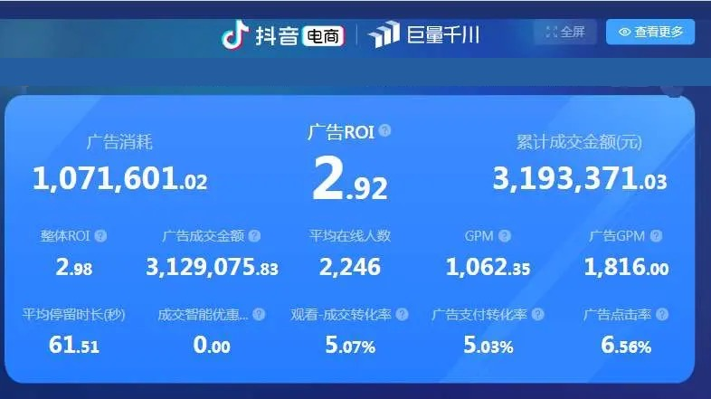
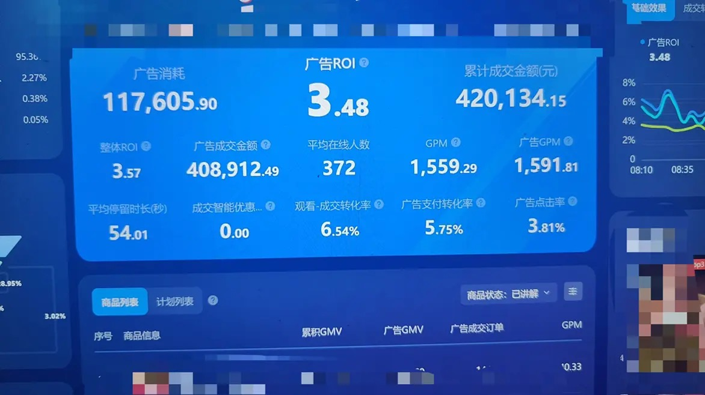

内容从业经验
覆盖视频编导、新媒体、信息流投放和 B2B 内容增长。01数据亮点
关键成果
把内容判断、投放经验和团队协作落到可复盘的数据里，既关注曝光，也关注线索、转化和长期内容资产。
月度投放体量
参与 / 操盘过千万级月度投放项目，关注预算效率和转化质量。服务行业客户
覆盖快消、零售、女装、互联网等多类型业务场景。团队管理经验
拆解月度目标，跟进执行过程并组织复盘。投放实战数据
百货零食 · 大体量操盘


02核心能力
内容增长能力栈
能力不是孤立技能点，而是一条从用户洞察、内容生产、投放测试到复盘优化的增长链路。
新媒体运营
聚焦抖音、小红书等内容场景，能完成账号定位、选题规划、视频图文内容生产、素材拍摄协同和数据复盘。
抖音小红书视频图文素材拍摄内容复盘
投放运营
熟悉账户搭建、素材测试、预算控制、ROI 优化和线索转化跟进，能把投放结果反哺内容方向。
千川投放巨量引擎素材测试ROI 优化
内容 SEO
围绕关键词、标题、FAQ 和内容结构做规划，让内容更容易被搜索引擎和目标用户找到。
关键词SEO 文章FAQ
B2B 内容运营
面向工业品和复杂产品场景，将产品参数、应用场景、选型逻辑和客户痛点沉淀为可检索、可转化、可复用的内容资产。
工业品内容选型逻辑场景转化内容资产
AI 内容生产
将 AI 纳入内容生产流程，用于资料拆解、结构化初稿、FAQ 扩展和多平台文案适配，并通过人工校验保证专业度与可信度。
结构化初稿FAQ 扩展人工校验内容适配
03工作经历
经历脉络
职业路径从内容制作出发，逐步延伸到平台运营、信息流投放、团队管理和 AI 辅助内容建设。
当前阶段
新媒体运营 / 品牌站 SEO / GEO 内容
当前某工业传感器企业
- 负责日常新媒体内容运营，围绕产品应用、选型问题和客户痛点规划短视频、图文与平台内容。
- 参与品牌站内容建设和必应 SEO 优化，整理关键词、规划文章结构，并配合页面发布与收录跟进。
- 参与 GEO 内容梳理，围绕问题型、场景型、参数型内容建设可被 AI 搜索理解的结构化资料。
上一阶段
运营经理 / 主管
南京宏博源真文化传媒有限公司
- 统筹抖音、小红书双平台内容运营，搭建「内容引流 → 用户沉淀 → 私域转化」闭环，用户转化率提升 25%。
- 负责账号定位、内容选题、短视频脚本、拍摄剪辑、发布节奏和数据复盘。
- 根据用户反馈和转化数据，持续优化内容方向、产品卖点和转化话术。
2022.02 – 2023.11
运营经理 / 主管
南京树洞文化传媒有限责任公司
- 负责客户千川投放策略制定、账户管理与项目服务，服务快消 / 零售 / 女装客户 25+。
- 操盘 1000 万+ 月度投放体量，制定账户结构、素材测试与预算分配，平均 ROI 提升 30%+。
- 0→1 搭建 15 人投放 / 运营团队，自研投放管理系统推动采买标准化，效率提升 40%、成本降低 15%。
2018.04 – 2021.07
导演 / 编导
西安教育电视台
- 负责节目选题策划、分镜脚本、拍摄执行、现场调度和后期制作。
- 参与儿童剧、纪实类节目及栏目内容制作。
- 积累视频内容策划、拍摄执行和后期制作经验。
04项目经历
项目实践
这些项目更像一套正在形成的内容基础设施：先整理资料，再生产内容，最后进入搜索、平台和销售场景。
工业品关键词体系与 SEO 内容建设
- 解决的问题
- 为产品词、型号词、应用场景词、选型词和 FAQ 词建立分层内容体系，提升内容规划效率。
- 我的职责
- 负责关键词整理、标题规划、文章结构设计、AI 辅助初稿、人工审核、内容发布与分发。
关键词体系SEO 内容文章结构内容分发
GEO 内容与 AI 搜索收录优化
- 解决的问题
- 让产品内容从普通文章升级为更容易被 AI 搜索理解、抽取和引用的结构化资料。
- 我的职责
- 围绕问题型、场景型、参数型和选型型内容，规划问答结构、场景说明和判断逻辑。
GEOAI 搜索问答结构场景内容
产品知识库搭建
- 解决的问题
- 把分散的产品资料、型号参数、FAQ 和选型规则统一沉淀，减少重复查找和重复生产。
- 我的职责
- 搭建产品线索引、型号索引、参数资料、FAQ 入口和内容选题库，形成可持续维护的资料结构。
Obsidian产品资料知识库内容资产
新产品站内容建设与收录配合
- 解决的问题
- 补齐产品站内容深度，提升产品介绍、应用场景、常见问题和相关文章模块的完整度。
- 我的职责
- 负责关键词整理、标题规划、AI 辅助文章生成、页面内容维护和必应 SEO 收录资料准备。
产品站品牌站 SEO内容建设收录跟进
05工具与教育
执行工具箱
工具不是展示清单，而是服务于一个目标：更快地把信息整理成内容，把内容沉淀成可复用资产。
剪映、Premiere、Photoshop，用于素材拍摄协同、短视频剪辑、图文处理和内容视觉包装。
飞书用于需求同步、项目跟进、任务拆解和复盘记录，让内容生产过程更可追踪。
Obsidian 用于沉淀产品资料、关键词体系、FAQ、选型规则和可复用内容模块。
AI 写作工具和基础网站后台，用于初稿生成、人工改写、页面发布、收录准备和内容维护。
教育背景
西安培华学院
本科
播音与主持艺术
2016.01 – 2020.01
06联系方式
欢迎交流
如果你关注 AI 内容生产、B2B 内容运营或投放增长，可以通过微信联系。适合交流合作机会、岗位机会或内容项目。
在职，可沟通
方向：AI 内容生产 / B2B 内容运营 / 投放增长
微信联系
zzzzzz_957